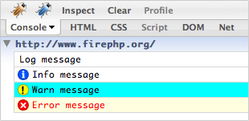

Un rédacteur est un objet qui hérite de
Zend_Log_Writer_Abstract. La responsabilité d'un rédacteur est
d'enregistrer des données de log dans un stockage particulier.
Zend_Log_Writer_Stream envoie des données de log à un
flux de PHP.
Pour écrire des données de log dans le buffer d'affichage de PHP, il faut utiliser
l'URL php://output. Alternativement, vous pouvez préférer envoyer des
données de log directement à un flux comme STDERR
(php://stderr).
$redacteur = new Zend_Log_Writer_Stream('php://output');
$logger = new Zend_Log($redacteur);
$logger->info("Message d'information");
Pour écrire des données dans un fichier, employer un des Filesystem URLs:
$redacteur = new Zend_Log_Writer_Stream('/chemin/vers/fichierdelog');
$logger = new Zend_Log($redacteur);
$logger->info("Message d'information");
Par défaut, le flux s'ouvre en mode d'ajout ("a"). Pour
l'ouvrir avec un mode différent, le constructeur de
Zend_Log_Writer_Stream accepte un deuxième paramètre facultatif
pour le mode.
Le constructeur de Zend_Log_Writer_Stream accepte également
une ressource existante de flux :
$flux = @fopen('/chemin/vers/fichierdelog', 'a', false);
if (! $flux) {
throw new Exception('Impossible d\'ouvrir le flux');
}
$redacteur = new Zend_Log_Writer_Stream($flux);
$logger = new Zend_Log($redacteur);
$logger->info("Message d'information");
Vous ne pouvez pas indiquer le mode pour des ressources existantes de flux.
Le faire entraînera une Zend_Log_Exception.
Zend_Log_Writer_Db écrit les informations de log dans une
table de base de données en utilisant Zend_Db. Le constructeur de
Zend_Log_Writer_Db reçoit une instance de
Zend_Db_Adapter, un nom de table, et un plan de correspondance
entre les colonnes de la base de données et les données élémentaires d'événement :
$parametres = array ('host' => '127.0.0.1',
'username' => 'malory',
'password' => '******',
'dbname' => 'camelot');
$db = Zend_Db::factory('PDO_MYSQL', $parametres);
$planDeCorrespondance = array('niveau' => 'priority', 'msg' => 'message');
$redacteur = new Zend_Log_Writer_Db($db,
'nom_de_la_table_de_log',
$planDeCorrespondance);
$logger = new Zend_Log($redacteur);
$logger->info("Message d'information");
L'exemple ci-dessus écrit une ligne unique de données de log dans la table
appelée nom_de_la_table_de_log. La colonne de base de données appelée
niveau reçoit le niveau de priorité et la colonne appelée msg
reçoit le message de log.
Zend_Log_Writer_Firebug envoie des données d'historisation vers
la console Firebug.

Toutes les données sont envoyées via le composant
Zend_Wildfire_Channel_HttpHeaders qui utilise les en-têtes HTTP pour
s'assurer que le contenu de la page n'est pas perturbé. Déboguer les requêtes AJAX qui
requière du JSON "propre" ou un réponse XML est possible avec cette approche.
Éléments requis :
-
Navigateur Firefox idéalement en version 3 mais la version 2 est aussi supportée.
-
L'extension Firefox nommée Firebug qui peut être téléchargée à cette adresse https://addons.mozilla.org/en-US/firefox/addon/1843.
-
L'extension Firefox nommée FirePHP ui peut être téléchargée à cette adresse https://addons.mozilla.org/en-US/firefox/addon/6149.
Exemple 565. Journaliser avec Zend_Controller_Front
// Placez ceci dans votre fichier d'amorçage
// avant de distribuer votre contrôleur frontal
$writer = new Zend_Log_Writer_Firebug();
$logger = new Zend_Log($writer);
// Utiliser ceci dans vos fichiers de modèles, vues et contrôleurs
$logger->log('Ceci est un message de log !', Zend_Log::INFO);
Exemple 566. Journaliser sans Zend_Controller_Front
$writer = new Zend_Log_Writer_Firebug();
$logger = new Zend_Log($writer);
$request = new Zend_Controller_Request_Http();
$response = new Zend_Controller_Response_Http();
$channel = Zend_Wildfire_Channel_HttpHeaders::getInstance();
$channel->setRequest($request);
$channel->setResponse($response);
// Démarrer l'output buffering
ob_start();
// Maintenant vous pouvez appeler le logguer
$logger->log('Ceci est un message de log !', Zend_Log::INFO);
// Envoi des données d'historisation vers le navigateur
$channel->flush();
$response->sendHeaders();
Les priorités incorporées et celles définies par l'utilisateur peuvent être
stylisées avec la méthode setPriorityStyle().
$logger->addPriority('FOO', 8);
$writer->setPriorityStyle(8, 'TRACE');
$logger->foo('Foo Message');
Le style par défaut pour les priorités définies par l'utilisateur peut être
paramétrer avec la méthode setDefaultPriorityStyle().
$writer->setDefaultPriorityStyle('TRACE');
Les styles supportés sont les suivants :
Tableau 112. Styles d'historisation de Firebug
| Style | Description |
|---|---|
LOG |
Affiche un message d'historisation basique |
INFO |
Affiche un message d'historisation de type information |
WARN |
Affiche un message d'historisation de type avertissement |
ERROR |
Affiche un message d'historisation de type erreur (celui-ci incrémente le compteur d'erreur de Firebug) |
TRACE |
Affiche un message d'historisation avec une trace extensible |
EXCEPTION |
Affiche un message d'historisation de type erreur avec une trace extensible |
TABLE |
Affiche un message d'historisation avec une table extensible |
Toute variable PHP peut être journalisée avec les priorités incorporées, un formatage spécial est requis si vous utilisez des styles d'historisation un peu plus spécialisé.
Les styles LOG, INFO, WARN,
ERROR et TRACE ne requièrent pas de formatage spécial.
Pour journaliser une Zend_Exception, fournissez simplement
l'objet exception au logguer. Il n'y a pas d'importance sur la priorité ou le style que
vous avez fourni puisque l'exception est automatiquement reconnue.
$exception = new Zend_Exception('Test d\'exception');
$logger->err($exception);
Vous pouvez aussi journaliser des données en les formatant comme un tableau. Les colonnes sont automatiquement reconnues et la première ligne de données devient automatiquement la ligne d'en-têtes.
$writer->setPriorityStyle(8, 'TABLE');
$logger->addPriority('TABLE', 8);
$table = array('Ligne de résumé pour la table',
array(
array('Colonne 1', 'Colonne 2'),
array('Ligne 1 c 1',' Ligne 1 c 2'),
array('Ligne 2 c 1',' Ligne 2 c 2')
)
);
$logger->table($table);
Zend_Log_Writer_Mail va écrire les entrées du log dans un message
courriel en utilisant Zend_Mail. Le constructeur de
Zend_Log_Writer_Mail requière un objet
Zend_Mail et optionnellement un objet
Zend_Layout.
Le cas d'utilisation principal de Zend_Log_Writer_Mail est
la notification les développeurs, les administrateurs ou toute personne concernée,
d'une erreur qui peut survenir dans des scripts.
Zend_Log_Writer_Mail a été crée avec l'idée que si quelque chose
ne tourne pas rond, une intervention humaine est nécessaire.
Voici un exemple d'utilisation basique :
$mail = new Zend_Mail();
$mail->setFrom('errors@example.org')
->addTo('project_developers@example.org');
$writer = new Zend_Log_Writer_Mail($mail);
// Ecrit le sujet. Un résumé des erreurs est ajouté à la suite
$writer->setSubjectPrependText('Errors with script foo.php');
// Limite uniquement au niveau Warning ou supérieur
$writer->addFilter(Zend_Log::WARN);
$log = new Zend_Log();
$log->addWriter($writer);
// Essai
$log->error('unable to connect to database');
// A la fermeture, Zend_Mail::send() est inviqué et concernera
// tous les logs passés dans le filtre.
Zend_Log_Writer_Mail utilisera un corps de message
en texte plein (plain text) par défaut.
Le filtre est géré. Par exemple si le filtre est réglé sur Warnings, et que 2 évènements warnings et 5 évènements erreurs se produisent, alors 7 évènements seront envoyés.
Une instance de Zend_Layout peut être utilisée pour générer
du HTML qui fera partie du courriel multipart. Si Zend_Layout
est utilisé, Zend_Log_Writer_Mail considérera que le corps HTML
du message sera la valeur du rendu de Zend_Layout.
En utilisant Zend_Log_Writer_Mail avec un objet
Zend_Layout vous pouvez utiliser un formateur
personnalisé grâce à setLayoutFormatter(). Si aucun formateur spécifique
Zend_Layout n'est indiqué, le formateur en cours d'utilisation
sera appelé. Voici un exemple :
$mail = new Zend_Mail();
$mail->setFrom('errors@example.org')
->addTo('project_developers@example.org');
// Nous ne spécifions pas le sujet du message dans l'objet Zend_Mail !
// Utilisons un simple objet Zend_Layout
$layout = new Zend_Layout();
// Créons un formateur à base de listes
$layoutFormatter = new Zend_Log_Formatter_Simple(
'<li>' . Zend_Log_Formatter_Simple::DEFAULT_FORMAT . '</li>'
);
$writer = new Zend_Log_Writer_Mail($mail, $layout);
// Appliquons le formateur sur le rendu de Zend_Layout.
$writer->setLayoutFormatter($layoutFormatter);
$writer->setSubjectPrependText('Errors with script foo.php');
$writer->addFilter(Zend_Log::WARN);
$log = new Zend_Log();
$log->addWriter($writer);
// essai
$log->error('unable to connect to database');
// A la fermeture, Zend_Mail::send() est inviqué et concernera
// tous les logs passés dans le filtre.
// l'email contiendra une partie "plain text", et une partie HTML
La méthode setSubjectPrependText() est utilisée à la place de
Zend_Mail::setSubject() pour que la ligne de sujet dans le courriel
soit générée dynamiquement avant l'envoi de ce dernier. Par exemple, si le texte indiqué
est "Erreurs depuis ce script", le sujet du courriel généré par
Zend_Log_Writer_Mail avec 2 warnings et 5 errors sera alors
"Erreurs depuis ce script (warn = 2; error = 5)". Si le sujet n'est pas indiqué
via Zend_Log_Writer_Mail, la ligne de sujet
de Zend_Mail, si il y en a une, sera utilisée.
Envoyer des rapports d'erreurs par emails peut être dangereux. Si votre système de surveillance d'erreurs n'est pas correct ou a un problème, vous risquez de vous retrouver inondé de tonnes d'emails en provenance de votre application.
A l'heure actuelle, il n'existe dans Zend_Log_Writer_Mail
aucun système de limitation ou de contrôle du nombre ou de la fréquence d'envoi
des emails. Si vous nécessitez un tel système, vous devrez l'implémenter vous-même.
Encore une fois, l'unique but de Zend_Log_Writer_Mail
est la notification d'un humain au sujet d'une erreur. Si ce système est
clairement contrôlé, alors il peut devenir un avantage très appréciable.
Zend_Log_Writer_Syslog écrit les rapports de log dans le
journal système (syslog). En interne, il utilise les fonctions PHP
openlog(),
closelog(), et
syslog().
Un cas d'utilisation intéressant de Zend_Log_Writer_Syslog
est le cluster de machines. La fonctionnalité de journal système permet de
faire en sorte que chaque machine enregistre dans un fichier de journal centralisé,
ce qui simplifie l'administration.
Par défaut, tous les messages gérés sont préfixés par "Zend_Log". Si vous souhaitez changer ce nom, utilisez le constructeur ou l'accesseur:
// A l'instanciation
$writer = new Zend_Log_Writer_Syslog(array('application' => 'FooBar'));
// Plus tard:
$writer->setApplicationName('BarBaz');
Le journal système vous aidera aussi à identifier les messages par types d'application ("facility"), les programmes de journalisation système vont générer des fichiers journaux différents en fonction des types d'application, ce qui là encore, peut aider dans l'administration.
Pour spécifier le type d'application, utilisez le constructeur ou l'accesseur.
Cette option peut être l'une des constantes utilisées par
openlog(), définies dans la page
du manuel de openlog().
// A l'instanciation
$writer = new Zend_Log_Writer_Syslog(array('facility' => LOG_AUTH));
// Plus tard
$writer->setFacility(LOG_USER);
En utilisant l'objet de log, continuez d'utiliser les constantes de
Zend_Log, elles vont être converties en leurs valeurs
par syslog().
Zend_Log_Writer_ZendMonitor vous permet de journaliser des évènements
via l'API de Zend Server. Vous pouvez alors aggréger des messages de journal pour l'application
et tout son environnement, ceci vers un seul endroit. En interne, cet objet utilise simplement la
fonction monitor_custom_event() issue de Zend Monitor.
Une caractéristique particulière de l'API Monitor est que vous pouvez spécifier n'importe quelle information dans le journal. Par exemple, journaliser une exception est possible en journalisant tout l'objet Exception d'un coup et pas juste son message. L'objet sera alors visible et analysable via le moniteur d'évènement de Zend Server.
![[Note]](images/note.png) |
Zend Monitor doit être installé et activé |
|---|---|
|
Pour utiliser cet objet d'écriture, Zend Monitor doit petre installé et activé. Si ce n'est pas le cas, alors l'objet d'écriture agira de manière transparente et ne fera rien du tout. |
Instancier l'objet d'écriture ZendMonitor est très simple:
$writer = new Zend_Log_Writer_ZendMonitor(); $log = new Zend_Log($writer);
Ensuite, journalisez vos évènements comme d'habitude:
$log->info('Voici un message');
Vous pouvez ajouter des informations à journaliser, passez les comme second paramètre:
$log->info('Exception rencontrée', $e);
Ce deuxième paramètre peut être de type scalaire, objet, ou tableau; si vous souhaitez passer plusieurs informations d'un seul coup, utilisez un tableau.
$log->info('Exception rencontrée', array(
'request' => $request,
'exception' => $e,
));
Au sein de Zend Server, votre évènement est enregistré comme un "évènement personnalisé" (custom event). Depuis l'onglet "Monitor", sélectionnez le sous menu "Evènements"(Events), et utilisez ensuite le filtre "Personnalisé"(Custom).

Evènements dans le récapitulatif Zend Server Monitor
Sur cette image, les deux premiers évènements listés sont des évènements personnalisés enregistré via
l'objet d'écriture ZendMonitor. Cliquez alors sur un évènement pour voir toutes ses
informations.

Détails de l'évènement dans Zend Server Monitor
Cliquer sur le sous menu "Personnalisé"(Custom) montre les détails, c'est à dire ce que vous avez passé
comme deuxième argument à la méthode de journalisation. Cet information est enregistrée sous la clé
info; et vous pouvez voir que l'objet de requête a été enregistré dans cet exemple.
|
Intégration avec Zend_Application |
|---|---|
|
Par défaut, les commandes zf.sh et zf.bat ajoute une
configuration pour la ressource 'log' de Comme dit précedemment, si l'API de Zend Monitor API n'est pas détectée sur votre installation de PHP, alors le journal ne fera rien du tout. |
Le Zend_Log_Writer_Null est une souche qui écrit des
données de log nulle part. Il est utile pour neutraliser le log ou déraciner le log
pendant les essais :
$redacteur = new Zend_Log_Writer_Null;
$logger = new Zend_Log($redacteur);
// va nulle part
$logger->info("Message d'information");
Le Zend_Log_Writer_Mock est un rédacteur très simple qui
enregistre les données brutes qu'il reçoit dans un tableau exposé comme propriété
publique.
$simulacre = new Zend_Log_Writer_Mock;
$logger = new Zend_Log($simulacre);
$logger->info("Message d'information");
var_dump($mock->events[0]);
// Array
// (
// [timestamp] => 2007-04-06T07:16:37-07:00
// [message] => Message d'information
// [priority] => 6
// [priorityName] => INFO
// )
Pour effacer les événements notés dans le simulacre, il faut simplement réaliser
$simulacre->events = array().
Il n'y a aucun objet composite de rédacteurs. Cependant, une instance
d'enregistreur peut écrire vers tout nombre de rédacteurs. Pour faire ceci, employer la
méthode addWriter() :
$redacteur1 =
new Zend_Log_Writer_Stream('/chemin/vers/premier/fichierdelog');
$redacteur2 =
new Zend_Log_Writer_Stream('/chemin/vers/second/fichierdelog');
$logger = new Zend_Log();
$logger->addWriter($redacteur1);
$logger->addWriter($redacteur2);
// va dans les 2 rédacteurs
$logger->info("Message d'information");